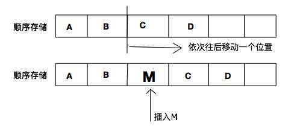

2020-08-15
23

线性表--知识点整理
线性表
一、基本概念
线性表 是最基本、最简单、最常用的一种数据结构。
1.线性表的特征
- 集合中必存在唯一的一个“第一元素”。
- 集合中必存在唯一的一个 “最后元素” 。
- 除最后一个元素之外，均有唯一的后继(后件)。
- 除第一个元素之外，均有唯一的前驱(前件)。
2.线性表的存储结构
线性表主要由顺序表示或链式表示。在实际应用中，常以 栈、 队列、 字符串等特殊形式使用。
顺序 表示指的是用一组地址连续的存储单元依次存储线性表的数据元素，称为线性表的顺序存储结构或顺序映像 （sequential mapping）。它以“物理位置相邻”来表示线性表中数据元素间的逻辑关系，可随机存取表中任一元素。
链式 表示指的是用一组任意的存储单元存储线性表中的数据元素，称为线性表的链式存储结构。它的存储单元可以是连续的，也可 以是不连续的。在表示数据元素之间的逻辑关系时，除了存储其本身的信息之外，还需存储一个指示其直接后继的信息 （即直接 后继的存储位置），这两部分信息组成数据元素的存储映像，称为结点 （node）。它包括两个域；存储数据元素信息的域称为数 据域；存储直接后继存储位置的域称为指针域。指针域中存储的信息称为指针或链。
二、线性表的存储
1.顺序存储结构
用一组地址连续的存储单元依次存储线性表的数据元素。
// --- 线性表的动态分配顺序存储结构 ---
#define LIST_INIT_SIZE 100 // 线性表存储空间的初始分配量
#define LISTINCREMENT 10 // 线性表存储空间的分配增量
typedef struct{
ElemType *elem; // 存储空间基址
int length; // 当前长度
int listsize; // 当前分配的存储容量（以 sizeof(ElemType)为单位）
}SqList;2.链式存储结构
可以用一组任意的存储单元存储线性表的数据元素。结点 是数据元素的存储映像，它包括数据域和指针域。 数据域中存储数据元素信息。指针域 中存储直接后继存储位置，这一位置信息被称为指针或链。
3.单链表、循环链表和双向链表
单链表: 其每个结点中只包含一个直接指向后继指针域。
循环链表： 整个链表的指针域链接成环。
双向链表： 每一个结点包含两个指针域，其一指向直接后继，另一指向直接前驱。
双向循环链表： 将头结点和尾结点链接起来的双向链表。
静态链表： 借用一维数组来描述线性链表。
// --- 线性表的单链表存储结构 ---
typedef struct LNode{
ElemType data;
struct LNode *next;
}LNode, LinkList;
// --- 线性表的双向链表存储结构 ---
typedef struct DuLNode{
ElemType data;
struct DuLNode *prior, *next;
}DuLNode, DuLinkList;
// --- 线性表的静态单链表存储结构 ---
# define MAXSIZE 100
typedef struct{
ElemType data;
int cur;
}component, SLinkList[MAXSIZE];三、线性表的主要操作算法设计与实现：
1.初始化线性表
Status InitList_Sq(SqList *L){
// 创造一个空的线性表L
L->elem = (ElemType *)malloc(LIST_INIT_SIZE * sizeof(ElemType));
if (! L->elem) exit(OVERFLOW); // 存储分配失败
L->length = 0; // 空表长度为0
L->listsize = LIST_INIT_SIZE; // 初始存储容量
return OK;
}2.创建单链表
LinkList *CreateList_L(int n){
// 逆序输入 n 个元素的值，建立带表头结点的单链表 L
LinkList *L, *p; int i;
L = (LinkList *)malloc(sizeof(LNode));
L->next = NULL; // 先建立一个带头结点的单链表
for(i=n; i>0; --i){
p = (LNode *)malloc(sizeof(LNode)); // 生成新结点
p->data = random(200); // 填入随机数
p->next = L->next; L->next = p; // 插入到表头
}
return L;
}3.双向循环链表插入元素
Status ListInsert_DuL(DuLinkList *L, int i, ElemType e){
DuLinkList *p, *q; int j;
if(i<1) return ERROR;
p = L; j = 0;
while(p->next!=L && jnext; j++;
}
if(p->next!=L || (p->next==head&&j==i-1)){
q = (DuLinkList*)malloc(sizeof(DuLinkList));
q->data = e;
q->next = p->next; q->prior = p;
p->next->prior = q; p->next = q;
return OK;
}
else return ERROR;
} 三、栈和队列
1.栈的基本概念
线性表主要由顺序表示或链式表示。在实际应用中，常以 栈、 队列、 字符串等特殊形式使用。
栈 是限制在线性表的一端进行插入和删除操作的线性表，也称为后进先出（Last In First Out, LIFO）线性表。 栈顶（top）允许进行插入、删除操作的一段，也称为表尾。栈底（bottom）固定端，也称为表头。空栈 表中没有元素。
栈的存储
// --- 栈的动态分配顺序存储结构 ---
#define STACK_INIT_SIZE 100 // 存储空间初始分配量
#define STACKINCREMENT 10 // 存储空间分配增量
typedef struct {
SElemType *base; // 在栈构造之前和销毁之后，base 的值为 NULL
SElemType *top; // 栈顶指针
int stacksize; // 当前已分配的存储空间，以元素为单位
}DySqStack;
// --- 栈的静态分配顺序存储结构 ---
# define MAX_STACK_SIZE 100
typedef struct{
SElemType stack_array[MAX_STACK_SIZE];
int top;
}StSqStack;
// --- 栈的链式存储结构 ---
typedef struct Node{
SElemType data;
struct Node *next;
}LinkedStack;2.队列的基本概念
队列 只允许在表的一端进行插入，而在另一端删除，是一种先进先出（First In First Out, FIFO）的线性表。 队头（front）允许进行删除的一段。 队尾（rear）允许进行插入的一端。循环队列将为队列分配的向量空间看作一个首尾相接的圆环。
队列的存储
// --- 队列的存储结构 ---
#define MAXQSIZE 100
typedef struct{
QElemType queue_array[MAX_QSIZE]; // 最大存储空间
int front; // 头指针，若队列不空，指向队列头元素
int rear; // 尾指针，若队列不空，指向队列尾元素的下一个位置
}SqQueue;
// --- 队列的链式存储结构 ---
typedef struct Node{
SElemType data;
struct Node *next;
}LinkedStack;
Comments

回复

回复

回复

回复